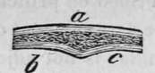
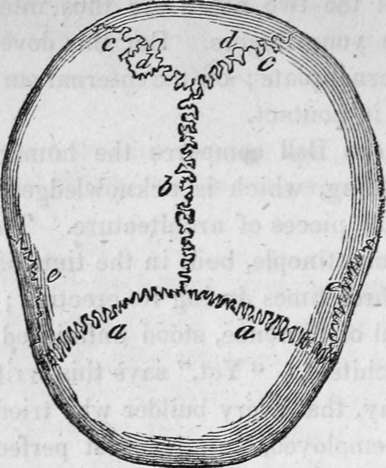

The Human Skeleton. Part 2
Description
This section is from the book "Human Physiology For The Use Of Elementary Schools", by Charles Alfred Lee. Also available from Amazon: Human Physiology, for the Use of Elementary Schools.
The Human Skeleton. Part 2
12. It has been truly remarked that the foundation of the Eddystone light house, the perfection of human architecture and ingenuity, is not formed on principles so correct, as those which have directed the arrangement of the bones of the feet; that the most perfect pillar is not adjusted with the accuracy of the hollow bones which support our weight; that the insertion of a ship's mast into the hull is a clumsy contrivance compared with the connexions of the human spine and pelvis ; and that the tendons are composed in a manner superior to the improved chain cables of Bloxham.
13. As the head is the noblest part, and the brain the most essential organ of the animal system, let us first direct our attention to it. The brain is liable to injuries, not only by sharp bodies touching and entering it, but by a blow upon the head, which shall vibrate through it, without the instrument piercing the skull ; and such a blow would more effectually destroy a man's senses, than even if a sword penetrated into its substance. It is obvious, that if the bony case were soft it would be easily pierced ; if of a brittle nature, it would be easily cracked, and if very firm and solid, like metal, it would ring and vibrate, and thus communicate the concussion to the brain.
14. To obviate these dangers, we find the skull composed of two plates of bone, one external, which is fibrous and tough, and one internal, so dense and hard, that it is called by anatomists the glassy table. Now, as the brain is liable to be hurt both by sharp and blunt instruments, the inner table is hard and brittle, calculated to resist any thing penetrating ; while the outer table is tough to give consistence, and stifle the vibration which would take place, if the whole texture were uniform. This may be illustrated by an example. If a soldier's head be covered with a steel helmet or cap, the blow of a sword, which does not penetrate, will yet bring him to the ground ; but if it be lined with leather and covered with hair, the vibration is not transmitted to the brain, and the wearer escapes without injury.
a, the external, b, c, the internal table; the intermediate cellular texture, being soft and spongy, and conveying vessels and nerves from one part to another.
15. It is worthy of particular remark, how the changes in the structure of the bones of the skull are adapted to the changes in the mind at different periods of life. At birth, the skull is soft and yielding, there being considerable intervals between the adjacent bones of which it is composed ; during childhood, it is highly elastic, so that the heedlessness of that period may not endanger concussion, to which it is so often exposed from falls ; and during youth and up to manhood, the parts which are exposed to the contact of external bodies, are thicker, and the bones are still not firmly consolidated at their sutures or seams, by which they are united. As old age approaches, man grows more timid, and is little disposed to feats of agility or activity ; something teaches him that falls or blows, which could once be borne with impunity, can no longer be encountered with safety; and if we examine the skull, we find the two layers of bone consolidated into one. The result of which is, that con. cussion at this period would be far more dangerous than in early life, or at the age of manhood.
16. The sutures, or joinings of the bones of the skull, interrupts, in a measure, the shock of the vibration produced by external violence, and also prevent fractures from extending as far as they otherwise would do, in one continued bony substance. No one can examine the joinings of two of the bones of the cranium, without admiring the minute dovetailing by which one portion of the bone is inserted into, and surrounded by the other, whilst that other pushes its processes out between those of the first in the same manner ; and the fibres of the two bones are thus interlaced, as you might interlace your fingers. But this dove tailing exists only in the external plate ; on the internal surface the bones are simply laid in contact.
17. Sir Charles Bell compares the human skull to the dome of a building, which is acknowledged to be one of the most difficult pieces of architecture. The dome of St. Sophia, in Constantinople, built in the time of the Emperor Justinian, fell three times during its erection ; and the dome of the Cathedral of Florence, stood unfinished 120 years for want of an architect. " Yet," says this writer, " we may, in one sense say, that every builder who tried it, as well as every labourer employed, had the most perfect model in his own head." The difficulty in constructing a dome, is the tendency of the weight of its upper part, to disengage the stones from each other which form the lower circle, and crowd out the circular wall on which it rests. This is guarded against, either by soldering the stones into each other, or by hooping them together by strong iron hoops. The dome of St. Paul's, in London, is secured by several strong double iron chains, linked together at the bottom and along the sides of the cone. Now, in the bones which compose the dome of the cranium, we find the edge of a bone at the suture lying over the adjoining bone at one part and under it at another ; which, with the dove tailing above mentioned, holds each bone securely in its place. But while a dome is calculated to resist one kind of force, viz. that acting perpendicularly, or in the direction of gravity, the skull is equally calculated to resist forces operating in all directions. Thus it can be shown, that no other form of equal strength could be devised. When we reflect on the strength displayed by the arched film of an egg shell, we need not wonder at the severity of blows which the cranium can withstand.

Continue to:
Tags
humans, anatomy, skeleton, bones, physiology, organs, nerves, brain